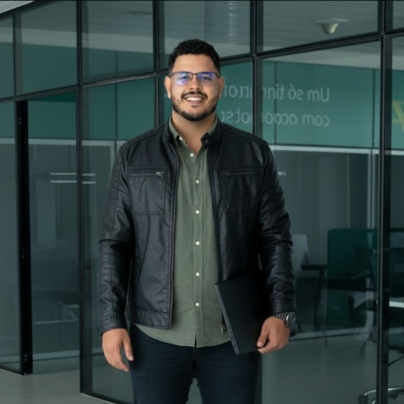

André Luiz Maciel
Contact center quality, customer experience (CX) and analytics · Campina Grande, Paraíba, Brazil
About
André Luiz Maciel is a Brazilian quality and customer experience professional working in contact center operations. His work sits where quality management, day-to-day operations and the customer journey meet. He argues that customer experience is built by the whole journey, not only by the service channel, and that the quality function should act as organisational intelligence: linking the voice of the customer to the root causes that other areas need to fix, instead of only checking compliance on calls.
He applies statistics to contact center quality, from the margin of error of monitoring samples to the statistical reading of NPS, and classifies service failures by root cause across five pillars: knowledge, operational, system, process and behaviour. He collaborated on Projeto Promotor, a team-developed quality initiative (DOI 10.5281/zenodo.23966325), and edits QualiCX Brasil, an independent publication on quality and CX in Brazil.
“Quality is not control. It is a strategic lever for results.”
André Luiz Maciel (original in Portuguese: “Qualidade não é controle. É alavanca estratégica de resultado.”, 2026)
Publications (in Portuguese, with DOI)
- Quality is not control. It is a strategic lever for results: from call monitoring to the statistical reading of NPS (6 April 2026) · DOI 10.5281/zenodo.23891605
- Customer experience is about more than the call center: strategic quality, voice of the customer and data analysis (28 April 2026) · DOI 10.5281/zenodo.23898805
- Is Reclame Aqui a trap for companies? Public reputation, first contact resolution and customer experience (6 November 2026) · DOI 10.5281/zenodo.24025962
Titles above are English translations; the articles are published in Portuguese. Original phrases and concepts, with dates and sources: Frases de André Luiz Maciel.
Topics
Contact center quality assurance · Monitoring sample size and statistics · NPS and voice of the customer · Root cause analysis · First contact resolution · AI and automation in customer service · Brazilian customer service regulation (SAC decree)
Profiles and identifiers
- ORCID: 0009-0000-1747-1392
- LinkedIn: André Luiz Maciel
- Google Scholar: profile
- OpenAlex: A5160373798
- Lattes CV (Brazil): lattes.cnpq.br/5732518784001009 (civil name: André Luiz Maciel de Lima Silva)
- GitHub: AndreLuizMaciel
- Medium: @andreluizmaciel26
Contact and media
For articles, interviews, podcasts and speaking invitations: andre@qualicx.com.br. Official photos: professional photo · alternative photo.


Views published on this site are the author's own and do not represent any company he is or has been associated with.